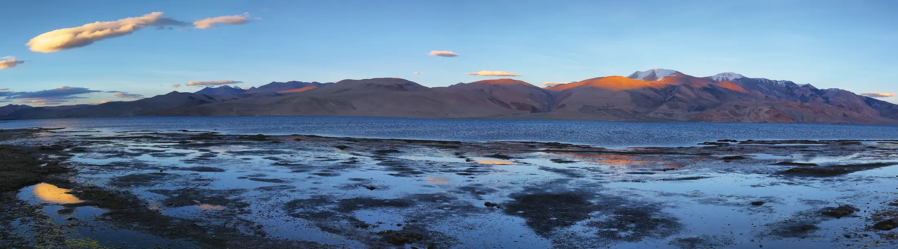

- The mountains come from SRTM radar elevation data (about 30 m grid), the colours from satellite imagery, the trail from OpenStreetMap or traced between campsites.
- It shows valleys, ridges, steepness and camps well; it smooths small cliffs and can't show snow or conditions on your dates.
- Every layer is open data, so anyone can check it, and you can report errors.
Every trek on Treqz is rebuilt in 3D from open data: the same kinds of datasets scientists and mapmakers use, stitched together for one trail at a time. Here's how it works, and where its limits are, so you know how far to trust what you see.
Step 1: the shape of the land (elevation)
The mountains come from a digital elevation model: a grid of heights covering the ground. Ours comes from AWS Terrain Tiles (originally built by Mapzen). For India, those are based largely on SRTM, the Shuttle Radar Topography Mission, which mapped most of the Earth's land from the Space Shuttle in 2000 using radar.
The tiles store heights inside ordinary image files. Each pixel's red, green and blue values encode an elevation (the "Terrarium" format: height = R × 256 + G + B ÷ 256 − 32768 metres). We decode those pixels into a height map for the area around each trek.
The grid spacing is about 30 m. That's detailed enough to show valleys, ridges and slopes clearly, but it smooths out small things: a single cliff band, a narrow gully or a boulder field won't appear as sharp as it is in real life.

Step 2: what the ground looks like (imagery)
On top of the shape we lay satellite imagery (Esri World Imagery, with data from Maxar and Earthstar Geographics). That's why forests look like forests and moraine looks like rock. Imagery is captured on different dates, so a slope may look green in the map even if you'll walk it in snow. On winter treks, Treqz adds simulated snow so the scene matches the season.
Step 3: the trail (OpenStreetMap and campsites)
Where volunteers have mapped the footpath in OpenStreetMap, we follow it. Where they haven't, the line is traced over the terrain between the trek's campsites, using the camp names and altitudes from the itinerary sources cited on each page. Either way the result is a good picture of the route, but not a survey-grade path.

Step 4: the horizon
A trek's character depends on the giants around it. We also build a wider ring of terrain around each trek, so distant peaks appear on the horizon in roughly the right place. Their positions are approximate, but close enough to recognise.
Step 5: the flythrough
The page then becomes a scroll-driven film. As you scroll, a camera follows the trail, pauses at each camp, and turns smoothly to show the view. Under it, the "almanac" gives the facts: day-by-day itinerary, best months, permits, gear and operators, each linked to its source.
What this data can't do
| It shows well | It can't show |
|---|---|
| Valleys, ridges and overall steepness | Small cliffs, gullies and exact footholds |
| Where each camp sits and how high it is | Snow, ice or rockfall on your dates |
| The rough line of the route | A precise path to navigate by |
| Which peaks surround you | Their exact bearing from every spot |
That's why every trek page carries the same note: the trail line is approximate and not a navigation map. Use the 3D view to understand and plan the trek; on the ground, follow your guide and the marked trail. Our guide to offline maps and what to carry covers navigation on the day.
Why open data matters
Because every layer is public, anyone can check our work. If something looks wrong on a trek you've done, a campsite in the wrong place, a route on the wrong side of a stream, tell us and we'll fix it. Every fact on the page links to where it came from.
Want to see it in action? Start with Kedarkantha, or the highest trek in the atlas, Rumtse to Tso Moriri at 5,435 m.
Quick questions
How accurate is the trail line?
Good enough to understand the route, not to navigate by. Where OpenStreetMap has the footpath we follow it; elsewhere it's traced between campsites over the terrain.
Why does the snow look the same everywhere?
Snow is simulated for winter treks so the scene matches the season; satellite images are taken on different dates and can't show snow on your trek day.
Can I report a mistake?
Yes. Every fact on a trek page links to its source; message us on Instagram and we'll check and fix it.